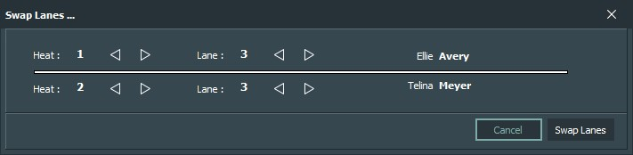
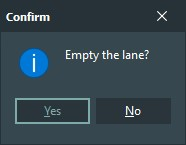

|
SwimClubMeet |
|
SwimClubMeet |
This section details the lane grid. It discusses the different functions of the ellipse button. How to manually assign a nominee to a lane. How to nominate and assign an active member to a lane. How to enter race times, disqualifications and scratch a swimmer..
| 1. Lane | A read-only field. The pool lane number. |
| 2. Entrant's Name | Here you have access to the ellipse button which allows you to enter a nominee manually into a lane. Prefixed to the name is the swimmers age and gender. |
| 3. race time | The swimmers time for the event, given by the Chief Timekeeper. |
| 4. TimeToBeat | A read-only field. A predicted race time for the entrant calculated on demand by SCM. |
| 5.PersonalBest | A read-only field. The entrant's Personal Best for this event. |
| 6. Lables |
S - Indicates if the entrant was scratched. (No show.)
D - Indicates if the entrant was disqualified.
|
| 7. Buttons | Lane Grid Buttons. |
Selection in the lane grid is cell based.
TAB and SHIFT+TAB are the most efficient way of moving around the grid. TAB and SHIFT+TAB key will only move to the cells that are editable. Those cells are RaceTime, scratched and disqualified. Pressing TAB at the end of a line will move you down to the next lane. Pressing SHIFT+TAB at the beginning of a line will move you up a lane.
Arrow keys will navigate across all cells. Use UP, DOWN, LEFT and RIGHT . Left and right arrow keys don't navigate off the current lane.
Info: These arrow keys are a little querky! You'll notice the left arrow can gets stuck inside time editboxes. They also effect how checkboxes are drawn. A developer's nightmare. Future releases will improve arrow key performance. üëç
|
Hover over the grid then RMouse click to access the context sensitive pop-up menu. |
üëâ To move the entrant, first select the lane, then use the short cut keys CTRL+UP and CTRL+DOWN.
üëâ Or RMouse click and use the pop-up menu, then select Move Up or Move Down from the menu.
üëâ Or click either of the Move Lane buttons to change the stack order.
üëâ Or click the Swap Lane button. This function can also be found in the pop-up menu. More about the function below.
Moving entrants may be disabled, it depends on the status of the heat or session.
It's possible to move an entrant into the previous or next heat just by using the short-cut keys or buttons.
Note: You can hover over any of the buttons for a helpful hint.
It's in this cell that you enter a swimmer's time for racing the event.
Selecting the cell will auto-matically place it in edit mode with all its contents selected. Just start typing. If you want to use the edit cursor, then press ENTER or F2 or LMOUSE click the cell a second time and the cursor will appear.
The RaceTime cell is special in that it uses a template or editmask. When the cursor is enabled and you are using the arrow keys to navigate you'll notice that the decimal period and colon characters are skipped over. Only numerical keys are accepted. Only minutes, secounds and milliseconds can be entered. Hours are not considered.
Hold down SHIFT while using the arrow keys, will select a portion of the time for editing.
DOUBLE LMOUSE click to select all.
To zero the time (00:00.000), select all and then press BACKSPACE .
Press ESC to clear what's been entered and restore the previous known value. This doesn't exit you from edit mode.
To exit edit mode, press ENTER, TAB, SHIFT-TAB, ARROW UP, ARROW DOWN. Or LMOUSE click outside the cell.
Entering an invalid time, for example 01:62.20, will be ignored. You can't have 62 seconds! The race time will revert when you exit edit-mode - ignoring your erronous entry. Note: you aren't prompted with an error message. Double check your race times.
The SCM_Timekeeper application can set a swimmer's race time remotely.
Most human timekeepers aren't the best at recording 1000ths. The reason SwimClubMeet accepts this precision is to prepare itself for electronic touch-pads. A future addition.
Info: The quickest method to enter a stack of entrant's race-times is to start at the top. Check that the cell's contents is all selected...
Enter the value, including leading zeros. Remember, only numericals (eg. If you want to enter 31 seconds and 41/100ths, do this, type 003141).
Then arrow down. Rinse and repeat.
A read-only cell. The lane number is auto-assigned and sorted by SCM. The number of lanes that appears in the grid is determined by settings found in the menu bar.
Tools ➡ Options ➡ Club ➡ Number of lanes.
A read-only cell, calculated by SCM. It's the most likely time it'll for the entrant to swim the event. Calculations are based on the members historical data using the algorithym selected in options.
Auto-Build Heats uses TimeToBeat to build a list of swimmers, ordered fastest to lowest. Swimmers without a TTB will be placed in the slowest heat. If you would like to know more about how TTB works, then follow this link.
This is a read only calculated field. The Personal Best is an entrants best race time achieved for the event - up to but excluding the current session.
If checked this indicates the entrant has been disqualified by the race marshall. The Marshal's application can set this remotely.
Press the SPACE key or mouse LMOUSE click to toggle.
If checked this indicates the entrant was scratched from the event. (A no-show.) The Marshal's application can set this remotely.
Press the SPACE key or mouse LMOUSE click to toggle.
To open the Swap Lane dialogue.
üëâ RMouse click and then select from the pop-up menu Swap Lanes ....
üëâ Or click the Swap Lane button.
It's not necessary to select the lane prior to opening the dialogue, but it can be helpful as it will auto-fill the dialogue for you.
|

Swimmers can be swapped in the current heat or across any heat that exists in the current selected event. You are permitted to swap empty lanes. Use the arrow icons to alter to the heat and lane number. üëâ Click the Swap Lane button to complete. üëâ Or click Cancel button to close without changes. |
Empty lane will clear the swimmer from the lane and return the member to the nomination stack, awaiting lane assignment.
The member is no longer an entrant, but remains a nominee for the event.
You can perform the action by first selecting the lane and then ...
üëâ Use the short cut key CTRL+X.
üëâ Or RMouse click and use the pop-up menu, then select Empty Lane from the menu.
üëâ Or click the Empty Lane button.
|

A confirmation dialogue box will appear. Press Yes to complete the process. It's safe to empty an empty lane. |
Scrub Lane is more thorough. It'll clears the member from the lane and removes the nomination reference for the current selected event. If the member wishes to compete in the event, the member will have to re-nominate.
You can perform the action by first selecting the lane and then ...
üëâ Use the short cut key CTRL+Del.
üëâ Or RMouse click and use the pop-up menu, then select Strike Entrant from the menu.
üëâ Or click the Strike Entrant button.
|
A confirmation dialogue box will appear. Press Yes to complete the process. |